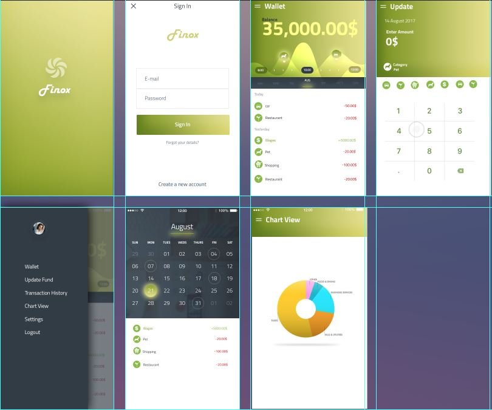
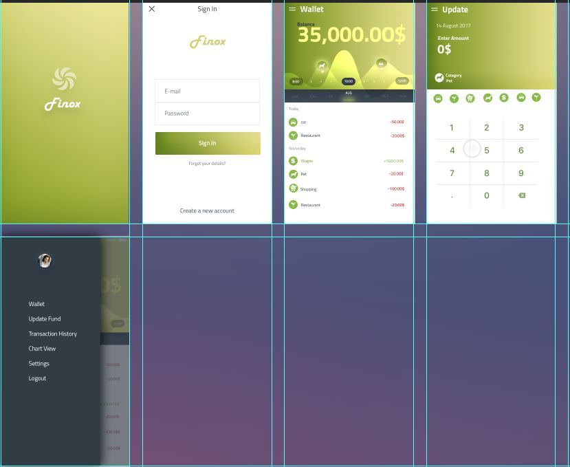

For this project, we were instructed to create a UI kit for a financial app. I browsed online on how to go about creating a UI kit and the different methods of doing it. But, I committed the mistake of assuming that we had to create a whole app instead of just presenting a kit. So, I explored various financial apps in order to understand how I have to create the app. Although, I did not base my app on any particular existing app, I shall provide an example below to help understand what was required in this project
Using inspiration from the existing apps, I took some elements that were common and also important from my point of view such as graphs/pie charts and transaction options etc. and incorporated them into my app. 
I selected a green theme for my design as green is a colour associated with money and would be appropriate given that it’s a financial app. Also, though the colour green is associated with money, there were not many apps that used this theme. Most of the apps majorly used various shades of blue. I also chose to go for a circular shape for my icons as it is widely considered that humans have an affinity for curves and tend to find it more attractive as compared to other shapes. Similarly, my fonts also had a similar curves on the edges and I chose to stay away from shapes or fonts with sharp edges.
I chose to use Adobe photoshop for creating my app screens and other icons as I was most comfortable using this app. I had previously used Adobe photoshop before during a trail in the class and believed it would be the best option for me given that I knew my way around it.
I started my work with the background. My first step was to add the base theme of a light shade of green. Then, I began to build my basic shapes which would I would later add to my app as buttons, text boxes and other icons. I made sure that I used the same measurements for my icons and fonts in order to maintain consistency.
Creating a base for all the required icons or buttons was very useful for me as these were easy to duplicate in the later stages for the different screens that was to be added into the app.
The basis for creating the shapes was on their use in the app. I assigned the same shapes to similar use and also took inspirations from other app for creating the icon shapes for navigation and options which were more or less the same throughout all the apps.
One of the main challenges I faced while making the app was with layering. I had to add multiple layers on each screen while adding different elements to it and this was a very time consuming and strenuous task. Another challenge I faced was while creating graphics onto the pages which in a sense gave the use an idea of what that particular window was about. As mentioned earlier, I experience with this app but, it was only the basics that I had learnt and I had to read up quite extensively on google to at each step to fully understand how to go about my task.